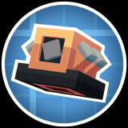
Create: Diesel Generators
附属模组
用柴油链给中后期供能
这是什么
补一条从原油到柴油的完整燃料链：抽取、蒸馏、储存、燃烧发电，柴油机可以输出应力，也可以直接驱动发电机。附带的油桶、油罐和管路能接进 Create 的流体系统。
命名空间：
createdieselgenerators 1.20.1 版本：本页物品与配方直接取自该版本的 jar。流体与储运51
生物柴油桶createdieselgenerators:biodiesel_bucket
没有工作台/机器配方
原油createdieselgenerators:crude_oil
没有工作台/机器配方
原油桶createdieselgenerators:crude_oil_bucket
没有工作台/机器配方
柴油桶createdieselgenerators:diesel_bucket
没有工作台/机器配方
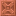
分馏塔储罐createdieselgenerators:distillation_tank
没有工作台/机器配方
原油探测器createdieselgenerators:oil_scanner
植物油createdieselgenerators:plant_oil
没有工作台/机器配方
植物油桶createdieselgenerators:plant_oil_bucket
没有工作台/机器配方
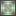
抽油机轴承createdieselgenerators:pumpjack_bearing
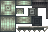
抽油机轴承 Bcreatedieselgenerators:pumpjack_bearing_b
没有工作台/机器配方
抽油机曲柄createdieselgenerators:pumpjack_crank
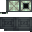
抽油机驴头createdieselgenerators:pumpjack_head
混凝土桶createdieselgenerators:black_cement_bucket
没有工作台/机器配方
黑色混凝土封装的流体管道createdieselgenerators:black_concrete_encased_fluid_pipe
没有工作台/机器配方
蓝色混凝土桶createdieselgenerators:blue_cement_bucket
没有工作台/机器配方
蓝色混凝土封装的流体管道createdieselgenerators:blue_concrete_encased_fluid_pipe
没有工作台/机器配方
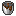
棕色混凝土桶createdieselgenerators:brown_cement_bucket
没有工作台/机器配方
棕色混凝土封装的流体管道createdieselgenerators:brown_concrete_encased_fluid_pipe
没有工作台/机器配方
密封储罐createdieselgenerators:canister
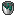
青色混凝土桶createdieselgenerators:cyan_cement_bucket
没有工作台/机器配方
青色混凝土封装的流体管道createdieselgenerators:cyan_concrete_encased_fluid_pipe
没有工作台/机器配方
乙醇桶createdieselgenerators:ethanol_bucket
没有工作台/机器配方
汽油桶createdieselgenerators:gasoline_bucket
没有工作台/机器配方
灰色混凝土桶createdieselgenerators:gray_cement_bucket
没有工作台/机器配方
灰色混凝土封装的流体管道createdieselgenerators:gray_concrete_encased_fluid_pipe
没有工作台/机器配方
绿色混凝土桶createdieselgenerators:green_cement_bucket
没有工作台/机器配方
绿色混凝土封装的流体管道createdieselgenerators:green_concrete_encased_fluid_pipe
没有工作台/机器配方
淡蓝色混凝土桶createdieselgenerators:light_blue_cement_bucket
没有工作台/机器配方
浅蓝色混凝土封装的流体管道createdieselgenerators:light_blue_concrete_encased_fluid_pipe
没有工作台/机器配方
淡灰色混凝土桶createdieselgenerators:light_gray_cement_bucket
没有工作台/机器配方
浅灰色混凝土封装的流体管道createdieselgenerators:light_gray_concrete_encased_fluid_pipe
没有工作台/机器配方
黄绿色混凝土桶createdieselgenerators:lime_cement_bucket
没有工作台/机器配方
黄绿色混凝土封装的流体管道createdieselgenerators:lime_concrete_encased_fluid_pipe
没有工作台/机器配方
品红色混凝土桶createdieselgenerators:magenta_cement_bucket
没有工作台/机器配方
品红色混凝土封装的流体管道createdieselgenerators:magenta_concrete_encased_fluid_pipe
没有工作台/机器配方
橙色混凝土桶createdieselgenerators:orange_cement_bucket
没有工作台/机器配方
橙色混凝土封装的流体管道createdieselgenerators:orange_concrete_encased_fluid_pipe
没有工作台/机器配方
粉红色混凝土桶createdieselgenerators:pink_cement_bucket
没有工作台/机器配方
粉红色混凝土封装的流体管道createdieselgenerators:pink_concrete_encased_fluid_pipe
没有工作台/机器配方
紫色混凝土桶createdieselgenerators:purple_cement_bucket
没有工作台/机器配方
紫色混凝土封装的流体管道createdieselgenerators:purple_concrete_encased_fluid_pipe
没有工作台/机器配方
红色混凝土桶createdieselgenerators:red_cement_bucket
没有工作台/机器配方
红色混凝土封装的流体管道createdieselgenerators:red_concrete_encased_fluid_pipe
没有工作台/机器配方
白色混凝土桶createdieselgenerators:white_cement_bucket
没有工作台/机器配方
白色混凝土封装的流体管道createdieselgenerators:white_concrete_encased_fluid_pipe
没有工作台/机器配方
黄色混凝土桶createdieselgenerators:yellow_cement_bucket
没有工作台/机器配方
黄色混凝土封装的流体管道createdieselgenerators:yellow_concrete_encased_fluid_pipe
没有工作台/机器配方
大型发酵储罐createdieselgenerators:bulk_fermenter
汽油createdieselgenerators:gasoline
没有工作台/机器配方
机器与设备48
生物柴油createdieselgenerators:biodiesel
没有工作台/机器配方
柴油createdieselgenerators:diesel
没有工作台/机器配方
柴油引擎createdieselgenerators:diesel_engine
分馏塔控制器createdieselgenerators:distillation_controller
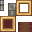
大型柴油引擎createdieselgenerators:huge_diesel_engine
模块柴油引擎createdieselgenerators:large_diesel_engine
引擎活塞createdieselgenerators:engine_piston
引擎消音器createdieselgenerators:engine_silencer
引擎涡轮增压器createdieselgenerators:engine_turbocharger
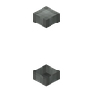
动力曲轴createdieselgenerators:powered_engine_shaft
没有工作台/机器配方
安山合金梁包住的传动轴createdieselgenerators:andesite_girder_encased_shaft
没有工作台/机器配方
工作盆盖板createdieselgenerators:basin_lid
黑色混凝土createdieselgenerators:black_cement
没有工作台/机器配方
蓝色混凝土createdieselgenerators:blue_cement
没有工作台/机器配方
棕色混凝土createdieselgenerators:brown_cement
没有工作台/机器配方
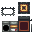
可控燃烧室createdieselgenerators:burner
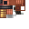
化学喷雾器createdieselgenerators:chemical_sprayer
动力化学喷雾器createdieselgenerators:chemical_turret
木屑柱createdieselgenerators:chip_wood_beam
青色混凝土createdieselgenerators:cyan_cement
没有工作台/机器配方
乙醇createdieselgenerators:ethanol
没有工作台/机器配方
灰色混凝土createdieselgenerators:gray_cement
没有工作台/机器配方
绿色混凝土createdieselgenerators:green_cement
没有工作台/机器配方
海带手柄createdieselgenerators:kelp_handle
浅蓝色混凝土createdieselgenerators:light_blue_cement
没有工作台/机器配方
浅灰色混凝土createdieselgenerators:light_gray_cement
没有工作台/机器配方
打火机createdieselgenerators:lighter
黄绿色混凝土createdieselgenerators:lime_cement
没有工作台/机器配方
品红色混凝土createdieselgenerators:magenta_cement
没有工作台/机器配方
橙色混凝土createdieselgenerators:orange_cement
没有工作台/机器配方
粉红色混凝土createdieselgenerators:pink_cement
没有工作台/机器配方
紫色混凝土createdieselgenerators:purple_cement
没有工作台/机器配方
红色混凝土createdieselgenerators:red_cement
没有工作台/机器配方
白色混凝土createdieselgenerators:white_cement
没有工作台/机器配方
黄色混凝土createdieselgenerators:yellow_cement
没有工作台/机器配方
食物与饮品1
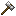
锤子createdieselgenerators:hammer